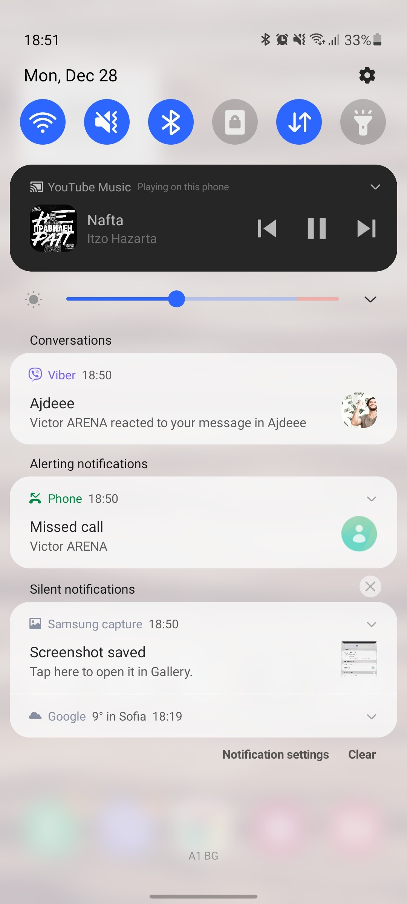
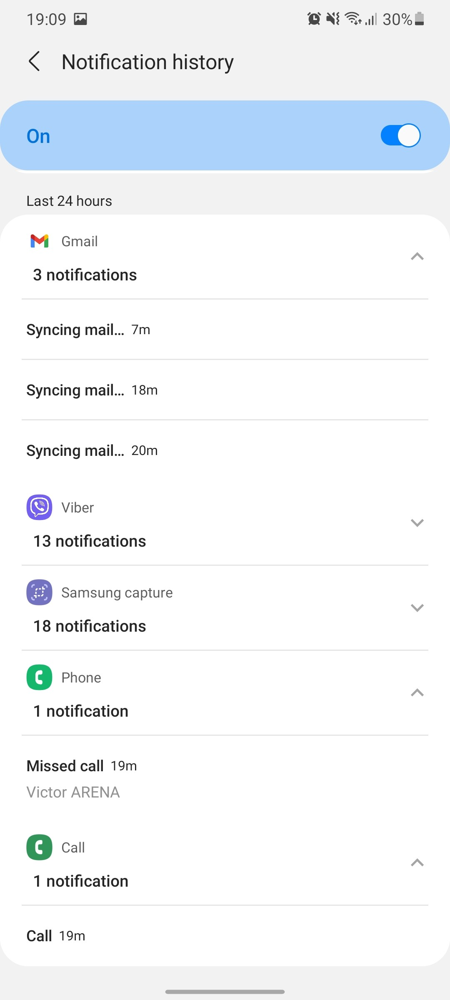
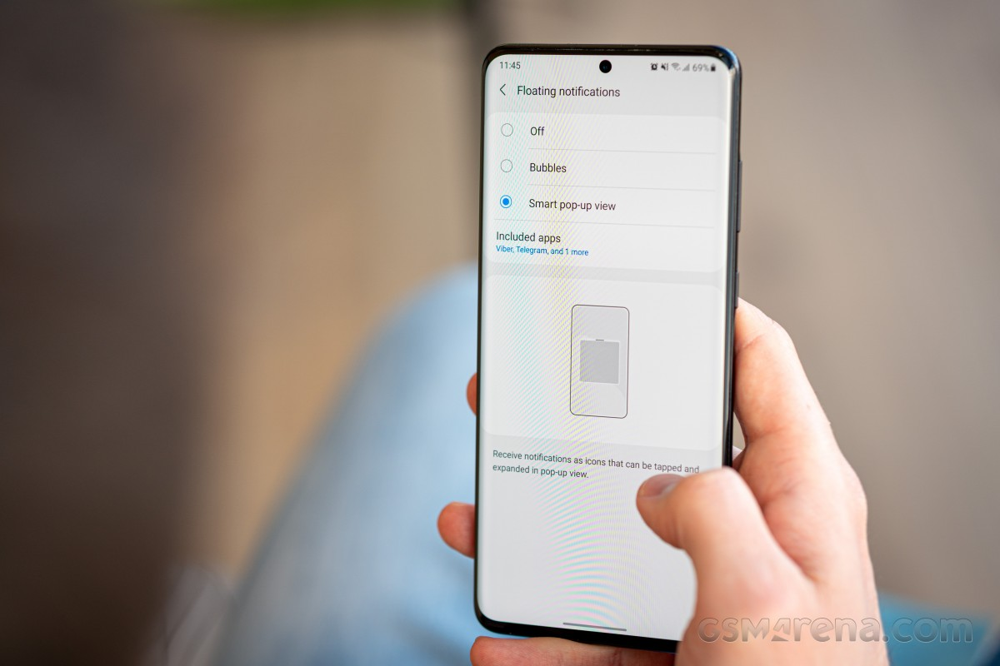
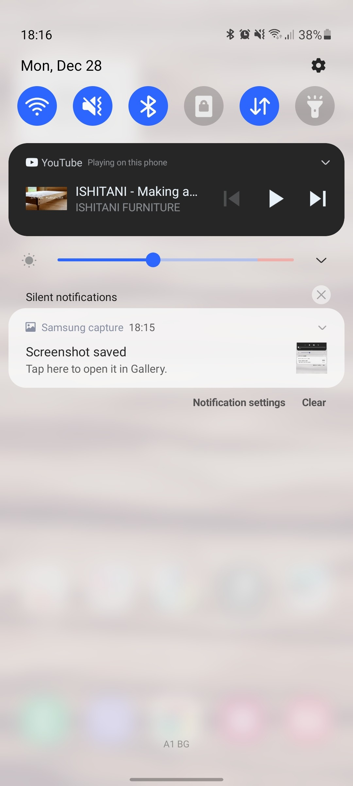
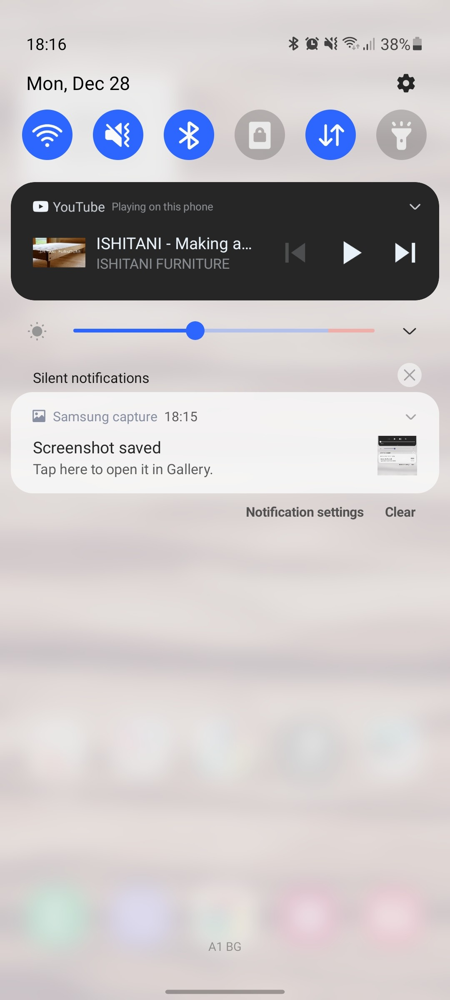
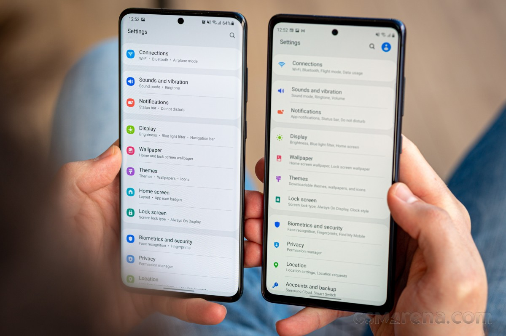
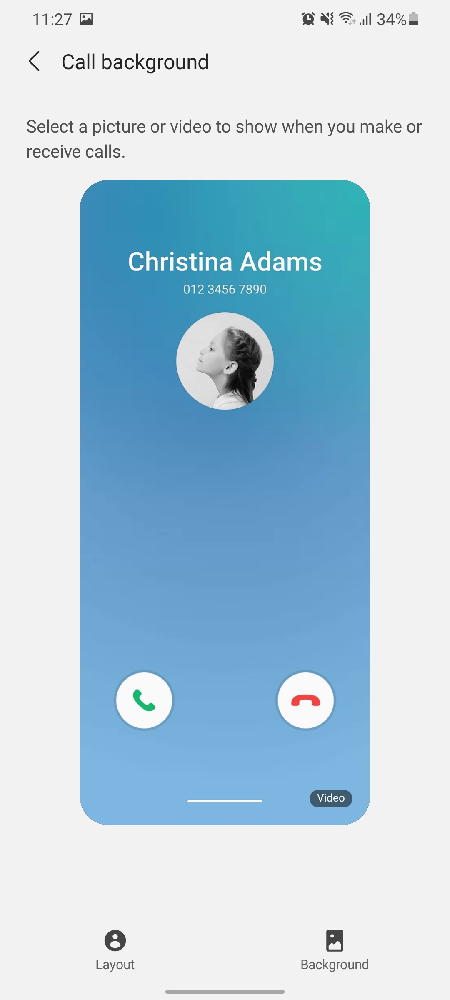
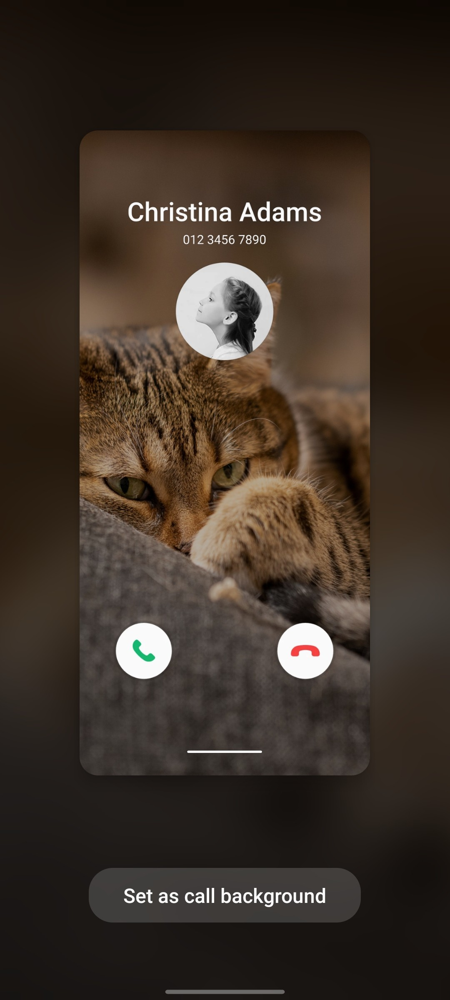

Few topics have had mobile phone users and media quite as united as the Android OS's fragmentation and the speed of updates. Manufacturers' custom overlays slow things down, and Samsung's often gotten the most flak in the past - it's had one of the heavier skins/launchers/whatever you want to call it, plus it's got a considerable portfolio of devices and their users to cater for. This has meant updates to the latest Android version have never been among the fastest out there. Well, Samsung's still got more Galaxies than most other makers have of their own brand of models, and it's still selling them by the buckets, and the in-house One UI is still one of the farthest removed from 'stock' Android, if that even remains a thing. But OneUI 3, based on the latest Android 11, is already here, within less than 4 months of Google's latest OS release. Which, when you come to think of it, is about the same timeframe that Samsung released Android 10 last year, so perhaps the narrative about the late updates is itself outdated.
Samsung's One UI 3 is based on the latest Android 11, which was released almost 4 months ago. Samsung's UI for its Galaxy phone has never been stock so their Android 11 implementation comes with its own spin. One UI 3 not only comes with new features but with an updated UI design, too. The UI basics are generally similar though you can spot the occasional change here or there. For example, the default lockscreen shortcuts - dialer and camera, are now monochrome - they used to match the respective apps' colors. Oddly enough, if you pick different apps, they will keep their colors - this seems like something to be addressed in One UI 3.1. Among the functional changes on the lockscreen is the added wellbeing widget - you can now keep track of how much time you spend on your phone without even unlocking it. Meanwhile, the always-on display settings have been simplified.
Another notable change is that pulling the notification shade covers the entire screen underneath, even if
there's just one notification card or none at all. Previously, the portion of the screen below the last
notification would remain visible, if darkened.
Oh, and one more thing about the notification shade - the quick toggles can now be edited directly from
the plus button at the end of the list instead of going into the menu.
Coming courtesy of Android 11, there is now Notification history, too. It's accessed from the Settings
menu, so it's not immediately accessible, but it's there for those occasions when you dismissed a
notification too quickly, and you can't seem to find what it was about.


Meanwhile, under Android 11 and One UI 3 instant messenger apps should be able to offer one of three
behaviors for sending you notifications. Under the 'Floating notifications' submenu, you can pick
between 'Bubbles', 'Smart pop-up view', or simply 'off'.

Bubbles is a native Android 11 behavior that's an extension of the Conversations feature, another new development. You tap on an icon in the initial incoming notification and it turns into a conversation which you can then minimize to a bubble, or what was a 'chat head' - originally a Facebook Messenger's thing that at least this one reviewer here hates with a passion. It's perhaps for the better then that Messenger's Chat heads as you know them from Android 10 no longer work under Android 11 with OneUI 3. Bubbles, however, do mostly the same thing, so if you do enjoy this method of handling chats, the option is there for you. Smart pop-up view is one of One UI's lesser-known proprietary features. Under Android 10, it used to add the chat head functionality to any application of your choosing. Tapping the hovering 'head' icon opened the app in a floating window, which you can further maximize to fullscreen or minimize it again to an icon. Sort of like Bubbles, only slightly different. Unfortunately, this appears not to be working under Android 11, even though the option for it remains in settings.
Introduced with Google's latest OS version, the new media controls have been implemented in One UI as well. You get a stack of the active audio playback apps right below the quick toggles and swiping to the side switches between the apps. The Media screen was already available on One UI 2.5 pre-Android 11, and it offers similar functionality for picking the output device or using Samsung's Music share feature.
The volume control panel has gotten a makeover too, and now the four sliders are vertical
instead of the
horizontal ones of OneUIs past.
 

Introduced with Google's latest OS version, the new media controls have been implemented in One UI as well. You get a stack of the active audio playback apps right below the quick toggles and swiping to the side switches between the apps. The Media screen was already available on One UI 2.5 pre-Android 11, and it offers similar functionality for picking the output device or using Samsung's Music share feature.
Yet another of the native Android 11 improvements that Samsung also includes in OneUI 3 is the ability to pin apps to the top of the sheet with Share options. It's one of those things that make you wonder how come it had to wait until v11 for us to get there. We've been using third-party apps to rearrange the apps on the ShareTo screen since Android's native automatic sorting has always worked in its own mysterious ways and often got in the way more than it helped. Things are much better now, but still, we'd like to be able to remove options too, because that list could sure use some decluttering, but baby steps is better than no steps at all. One more thing that Google tweaked in this year's release is the permission handling, and Samsung's implemented it in One UI 3 as well. With this version, you will now see a new prompt for permissions every time an app requests it, letting you deny permission, allow it only while using the app, or just for this one time. If an app requires constant access to permission, you also get a fourth option that takes you to a setting page where you can provide it. The way this is done prevents the user from accidentally selecting this option while blazing through the permission dialogs.
One very noticeable change that immediately caught our eyes was how subcategories are listed in the Settings menu. The dot separator and extra intervals make the text a lot more legible than the seemingly unseparated long strings of before.

We'd still normally use the search bar for finding settings, and there are changes in there too. Recent searches are now shown as bubbles as opposed to a list, and there's a newly added feature to search settings by hashtags - because hashtags were precisely what was missing from your settings menu. #sarcasm
The dialer comes with a bunch of cosmetic changes itself. You get to pick one of two layouts for the in-call screen. You can also set up a background image or video for that screen, though it's going to be all the same for all of your calls - you can't have a different one on a per-person basis.


Samsung advertises an improved camera experience on One UI 3 in key areas like AI-based zoom, auto exposure, and autofocus, but those are hard to quantify and outside the scope of this article.
What does belong here are the subtle touches to the Gallery app. You now get a filmstrip of tiny thumbnails on the bottom of the screen when looking at a photo. Additionally, swiping up on the photo will reveal a screen with a snapshot of a map of where the picture was taken, plus related 'Stories' and photos. The phototagging interface has been retouched, too, though we're ones that rely on Google Photos for organizational tasks of this sort.
A side effect of the reimagined interface is that the exposure details are now a further tap away. And even worse, you need to tap specifically on the arrow to the right of the path, the rest of the field is not actionable.
Another new addition is the Gallery's ability to keep the original files for images you edit on the phone - that way you see the final result in the Gallery, but you can always revert to the original shot.
We realize One UI 3 is in its infancy – or, rather, Samsung's implementation of Android 11 is. So we were willing to cut them some slack, despite all the betas and everything, which is why we contemplated dropping this chapter. In the end, our collective whining nature got the better of us, and we figured we should still mention what bugged us even in this 'final' release of the software – just for the sake of thoroughness
For one, the Bubbles vs. Smart pop-up situation is somewhat weird. Bubbles do seem to make Smart pop-up redundant, as they offer similar functionality, minus the resizing. On the other hand, if you were used to Samsung's thing and do need the resizing capability, it's good that Samsung still gives you that option. Only partially, though – Smart pop-up does not work on our units for one reason or another. And that's on top of the fact that Bubbles themselves don't work reliably with all messaging apps. The last line in the update's changelog reads that you 'can no longer connect to Chromecast using Smart View. You can use Google Home instead'. While that's an unfortunate development if you tend to use your Galaxy smartphone for casting stuff from the phone's gallery to Chromecasts or Android TV. But it's hardly the end of the world since we've been able to successfully mirror the phone's screen using Smart View on WebOS TVs, as well cast to Chromecasts from apps such as YouTube without specifically using Smart View. It's still a limitation brought about the update, and allegedly, you can work around it by mirroring your screen from the Google Home app. Next, we've been having issues with the popular password manager Last Pass, too. Not really in Samsung's court this one, but often, when we needed to log in to a site, the Last Pass fingerprint authentication prompt would appear for a brief instant and go away before you get a chance to act on it, leaving us with no way to authenticate and log in. The workaround is to specifically open Last Pass, authenticate and then go back to the website with Last Pass already pre-authorized to log in. Hardly ideal, but it will probably get patched in the next update of the password manager.
Another early issue that we experienced, and it was a very odd one, was that Instagram would simply crash when you scroll to a particular image on certain profiles. It would do it with an infuriating consistency for those particular accounts and that particular meme. We've been unable to replicate it recently, so we gather that bug has been fixed. We've seen complaints online about several issues with the One UI 3 beta, some of them reportedly extending to the final release too. Those include and are probably not limited to navigation gesture unresponsiveness, reduction in benchmark performance, and Google Pay not working. We experienced no tangible difference in gesture behavior, and Google Pay is functioning just fine. On the other hand, a certain reduction in benchmark scores could indeed be seen, though the 5% ballpark of the differences we're getting is hardly what we'd call significant.
OneUI 3 is all about refining what was already good with previous iterations of Samsung's Android overlay and adding in the new Android 11 bits. As such, there's hardly anything not to like about it, particularly when you consider that we've been fans of One UI since One UI One - well, perhaps aside from the naming
There is still a handful of features or bugs that need some extra polish. In our experience, those have been related to the implementation of the native Android 11 features and the third-party apps' preparedness for the new OS version. One UI itself – that remains a winner for us.